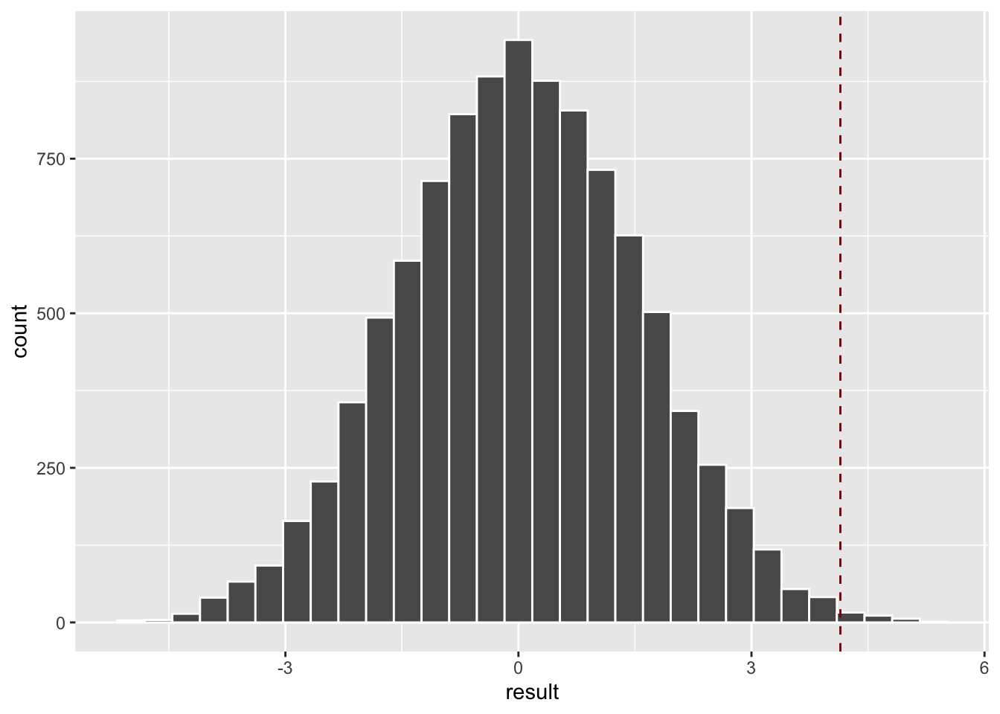

library(Sleuth3)
library(tidyverse)02: Permutation Tests
Class Example: Motivation Experiment
Load Data
The data for this example lives in the {Sleuth3} R package. This chunk of code loads in the data package, and the {tidyverse} package, which provides data wrangling and visualization code.
The dataset is called case0101. We can print the first 10 rows of the dataset with the following:
case0101 |>
slice_head(n = 10) Score Treatment
1 5.0 Extrinsic
2 5.4 Extrinsic
3 6.1 Extrinsic
4 10.9 Extrinsic
5 11.8 Extrinsic
6 12.0 Extrinsic
7 12.3 Extrinsic
8 14.8 Extrinsic
9 15.0 Extrinsic
10 16.8 ExtrinsicThe |> is called a “pipe”, and tells R to take the output of the first line of code and “pipe” it into the second.
EDA
The next thing we should do is Eploratory Data Analysis, or EDA. In this class, that typically means (1) create a visualization and (2) compute summary statistics.
We’ll make the side-by-side boxplots from the slides:
case0101 |>
ggplot(aes(x = Score, y = Treatment, fill = Treatment)) +
geom_boxplot()
You can also use the {esquisse} package for this class.
To compute summary statistics, we can either use summary():
summary(case0101) Score Treatment
Min. : 5.00 Extrinsic:23
1st Qu.:14.90 Intrinsic:24
Median :18.70
Mean :17.86
3rd Qu.:21.25
Max. :29.70 or the favstats() function from the {mosaic} package. This function uses formula syntax, which says to group “Score” based on the “Treatment” variable.
library(mosaic)
favstats(Score ~ Treatment, data = case0101) Treatment min Q1 median Q3 max mean sd n missing
1 Extrinsic 5 12.150 17.2 18.95 24.0 15.73913 5.252596 23 0
2 Intrinsic 12 17.425 20.4 22.30 29.7 19.88333 4.439513 24 0Compute Test Statistic
We’ll follow the code in the book to create two vectors, one for the “Extrinsic” group and one for the “Intrinsic” group. We can check that we’ve done this correctly using summary() and comparing it to the results from favstats()
Score <- case0101 |>
pull(Score)
Score_Extrinsic <- case0101 |>
filter(Treatment == "Extrinsic") |>
pull(Score)
summary(Score_Extrinsic) Min. 1st Qu. Median Mean 3rd Qu. Max.
5.00 12.15 17.20 15.74 18.95 24.00 Score_Intrinsic <- case0101 |>
filter(Treatment == "Intrinsic") |>
pull(Score)
summary(Score_Intrinsic) Min. 1st Qu. Median Mean 3rd Qu. Max.
12.00 17.43 20.40 19.88 22.30 29.70 Since our test statistic is the difference between the two means, we will compute the difference in means between Score_Extrinsic and Score_Intrinsic and save it to a vector called observed
observed <- mean(Score_Intrinsic) - mean(Score_Extrinsic)
observed[1] 4.144203Conduct Permutations
To conduct the permutation test, we want to do a large number of permutations (called N in the code chunk below). The code in the for loop is run N times. Each time, we randomly sample observations in our dataset and assign them to the “Intrinsic” group. The observations that were not sampled are assigned to the “Extrinsic” group. In each simulation, we compute the difference in the means between the two groups and save it to our result vector.
N <- 10^4 - 1 # Number of permutations to do
sample_size <- nrow(case0101) # Sample size for each permutation (same as data)
result <- numeric(N) # Create an empty vector to store results
for (i in 1:N){
index <- sample(sample_size, 24, replace = FALSE) # Sample indices for group 1
result[i] <- mean(Score[index]) - mean(Score[-index]) # Compute differences between groups
}Make plot of test statistics
We can visualize the results of the permutation distribution using {ggplot2}. I’ve also overlayed a red line that shows what our observed test statistic was.
ggplot() +
geom_histogram(aes(x = result), col = "white") +
geom_vline(xintercept = observed, linetype = "dashed", col = "darkred")
Compute p-value
The following code chunk computes the fraction of simulations which resulted in a test statistic that was larger than the observed difference:
(sum(result >= observed) + 1)/(N+1)[1] 0.0024Your turn: Verizon Response Times
Note: this example has been adapted from the textbook
Verizon is the primary local telephone company (incumbent local exchange carrier (ILEC)) for a large area of the Eastern US. As such, it is responsible for providing repair service for the customers of other telephone companies known as competing local exchange carriers (CLECs) in this region. Verizon is subject to fines if the repair times (the time it takes to fix a problem) for CLEC customers are substantially worse than for Verizon customers.
The dataset
Verizoncontains a sample of repair times for 1664 ILEC and 23 CLEC customers. The mean repair times are 8.4h for ILEC customers and 16.5 for CLEC customers. Could a difference this large be explained by chance?
To load in the data, use
library(resampledata3)Verizon |>
slice_head(n=10) Time Group
1 17.50 ILEC
2 2.40 ILEC
3 0.00 ILEC
4 0.65 ILEC
5 22.23 ILEC
6 1.20 ILEC
7 2.08 ILEC
8 4.97 ILEC
9 0.00 ILEC
10 27.65 ILECEDA
Create an appropriate EDA
# your graph code here# your summary code hereTest statistic
Compute the appropriate test statistic
# your code hereConduct Permutations
# your permutation code hereMake plot of test statistics
# your code hereCompute p-value
# your code hereWhat do you conclude?
Your turn: Verizon Response Times
Create a histogram of the repair times for each group.
# your code hereYou should observe a long tail – there are some very large response times. The mean is sensitive to outliers, and so we may wish to use a test statistic that is more robust. Repeat the last example, but replace the difference in means with a difference in medians. How do your results and conclusions change?